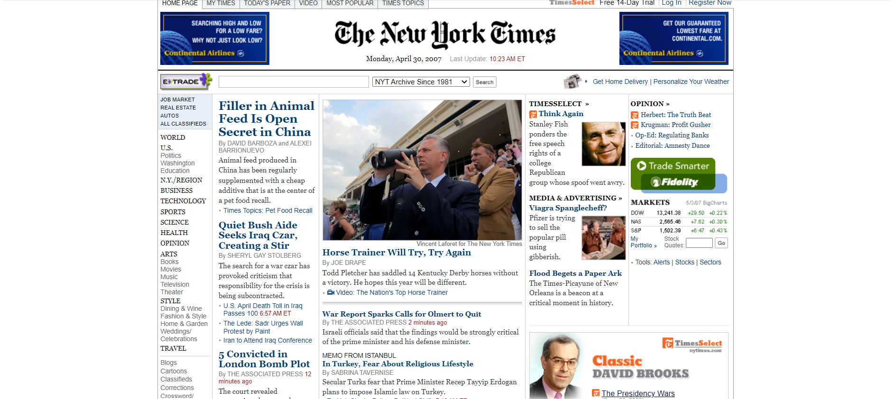
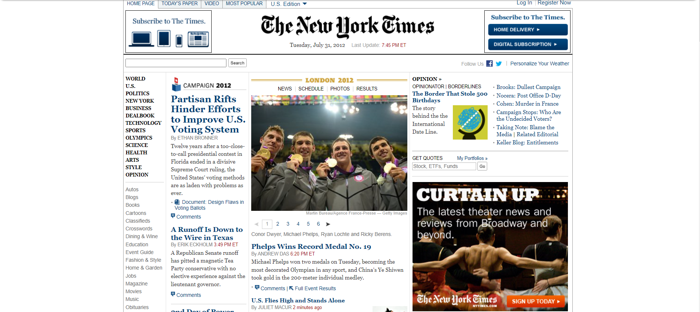
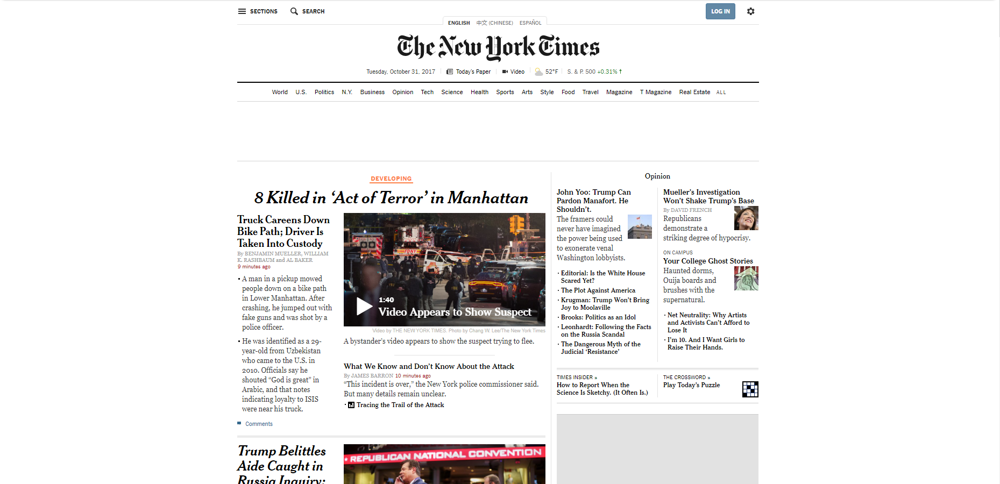
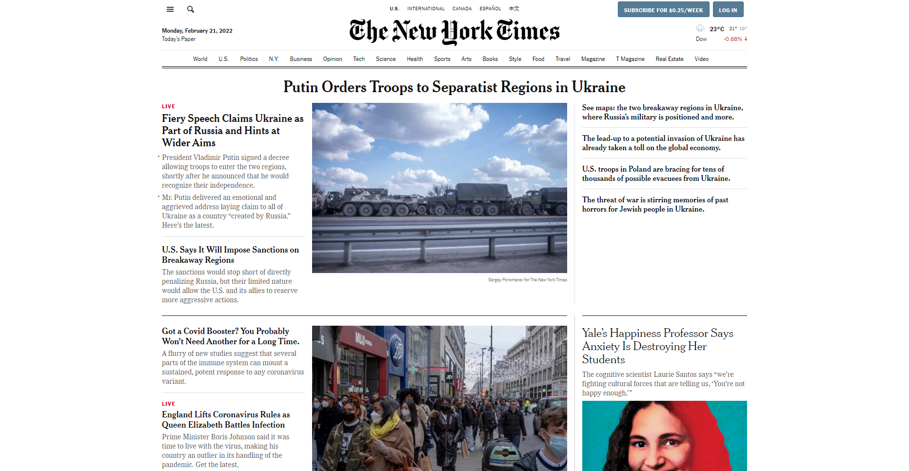

Neste primeiro site que vamos observar podemos perceber que ele tinha o propósito de ser um jornal virtual, mostrando as principais notícias, preços de ações na bolsa de valores e procurar vagas de empregos. bem parecido com um jornal de papel mesmo.
2. Site "The New York Times" em 2007:

5 anos depois, em 2007, podemos observar que já há uma centralização da página, maior utilização de imagens e maior uso de anúncios, porém muita infrmação e algo um tanto desorganizado.
3. Site "The New York Times" em 2012:

Podemos ver que de 2007 para 2012 não teve muitas mudanças, podemos perceber que o tamanho dos títulos das notícias aumentou, dando assim mais enfoque para elas, e tem menos informações juntas, está mais agradável visualmente, mesmo não usando códigos muito avançados, também podemos perceber que diminuiu o número de anunciantes e tem opções para logar.
4. Site "The New York Times" em 2017:

Aqui podemos ver que o site está bem mais moderno, mais simples, com menos informações na mesma página, Bem mais agradável visualmente comparando com 15 anos atrás. No próximo tópico iremos conferir o site em 2022 e ver se o propósito dele mudou em 20 anos e citar os problemas que podem ser melhorados.
5. Site "The New York Times" em 2022:

De 2002 para 2022, a página do The New York Times, continua com o mesmo propósito de mostrar as notícias, continua mostrando valores da bolsa, de moedas do mundo, temperatura, porém agora com um visual muito melhor, mais limpo, menos informação de uma vez, e centralizado.
Quanto aos problemas que eu pude notar, em meu ver, 20 anos atrás ele tinha muitas notícias e informações em um lugar só, fica feio de ver e difícil de entender o que ler primeiro, para onde ir, e estava todo para o lado esquerdo da tela deixando um grande vazio na direita, poderia centralizar para ter mais espaço e não ficar tudo amontoado.
Sobre o site atual, tem uma grande melhora, as informações estão mais espalhadas, centralizadas, as notícias possuem imagens e tudo mais, porém, eu iria deixar na página inicial as opções de temas lá em cima para você escolher, e quando você for descendo a página iria ter títulos grandes e coloridos sobre o tema das notícias que iria ter naquela parte da página e colocar menos notícias uma do lado da outra, pra ficar em ordem e uma de cada vez, com imagens e um enfoque maior no título da notícia.